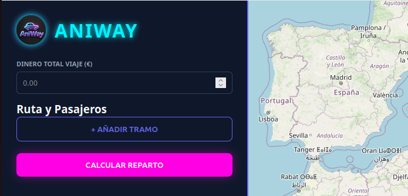

Proyectos

AniWay
Calculadora de gastos de viaje, que permite calcular cuánto debe pagar cada persona según grupos y kilómetros recorridos, mostrando un resumen individual.
Python · Flask · HTML · CSS · JavaScript

Proyecto 2
Sistema funcional con lógica backend y base de datos.
Python · SQL

Proyecto 3
Prototipo UI/UX centrado en experiencia y microinteracciones.
Figma · Diseño de interfaz